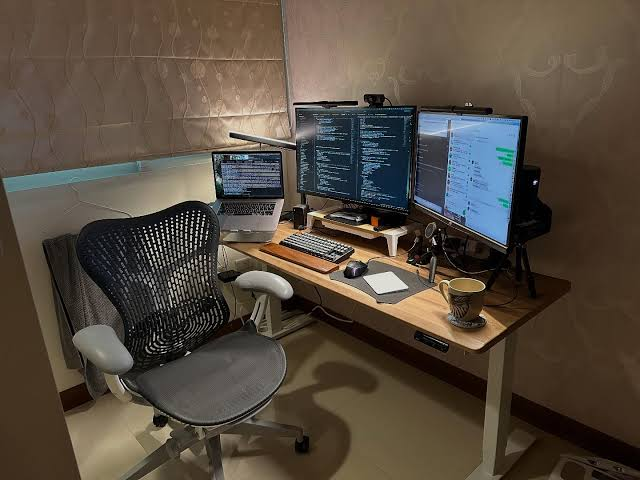

About This Portfolio
The purpose of this website is to document my engineering journey, showcase practical implementations in system administration and DevOps automation, and provide technical breakdowns of ongoing projects.
This portfolio platform was officially launched on to track production milestones and architectural designs.
Core engineering philosophy: Deterministic automation always outlasts manual intervention.

"Simplicity is prerequisite for reliability." — Edsger W. Dijkstra
Click to view core technical competencies
Specialized in Ubuntu Server administration, Docker container orchestration, Tailscale private overlays, workflow automation, and broadcast operations.